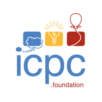

timeline
Present
Teaching Assistant - Stony Brook University, CSE 320: Systems II. Author homework assignments, autograder tests, and exam questions for systems programming topics.
Hold weekly office hours and review sessions covering debugging, memory, concurrency, and assignment design.
2026
MicroBook - Independent C++20 systems project. Built a deterministic single-symbol limit order book with price-time matching, replay, final-state verification, and invariant tests.
Added command-line tools, fixed-seed randomized tests, and Google Benchmark workloads.
Aug 2025
Research Assistant - Stony Brook University. Developed a modular PyTorch AutoAnnotator with grid search and k-fold cross-validation on 27k cell profiles.
Built a SLURM pipeline for 55 GB/day across 8 A100 GPUs, reducing epoch time from 130 to 45 minutes and improving rare-cell F1 by 15 percentage points.
2024
Software Engineering Intern - Giesecke+Devrient. Developed an XGBoost demand-forecasting service and deployed an AWS Lambda and Kinesis ETL pipeline.
Added Jest tests with 90%+ coverage and automated releases using Docker, Kubernetes, and GitLab CI.
May 2027
B.S. in Computer Science & Applied Mathematics - Stony Brook University. Dean's List recipient.
Coursework includes Data Structures, Analysis of Algorithms, Software Engineering, Systems I & II, Computational Geometry, Probability & Statistics, and Deterministic & Stochastic Models.
projects
systems, simulation, and mathematical programming projects
- microbook - deterministic c++20 limit order book with price-time matching, event replay, final-state verification, invariant tests, cli tools, and benchmarks
- hold'em engine - poker ui modelling game strategies with monte carlo simulations for pot equity. features bitwise hand evaluator for optimal performance using c++20
- plinko simulator - interactive p5.js game exploring ball dampening, x-biasing, odds, and player engagement
publications
- B. Lukacsy, , A. Jalwan. "Supervised Deep Learning for Automatic Cell-Type Annotation with scRNA-seq". URECA Symposium 2025. paper • presentation
activities
founder & president — stony brook quant club - leading 80+ members with corporate sponsorships, poker tournaments, puzzle nights, jane street estimathon, and flow traders info sessions
student awards - €1,500 Stellantis Student Award and $1,000-per-semester Stony Brook International Excellence scholarship

sbu icpc qualifier — 2nd place - 2nd overall in junior category with 200+ problems solved across codeforces, leetcode, atcoder, and cses platforms
uae imo national qualifier — rank 6 - rank 6 nationally with invitation to imo training camp, demonstrating advanced mathematical problem-solving skills
skills
- python, c++17/20, java, sql, bash, pytorch, numpy, pandas, scikit-learn
- linux, aws, docker, kubernetes, slurm, git, ci/cd
- competitive programming, mathematical olympiads
- deep learning, machine learning, statistical analysis